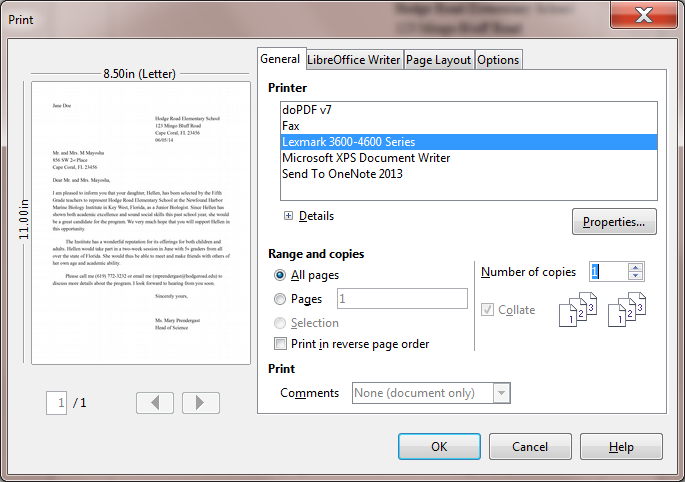

Lesson 1 Introduction to WRITER¶
1 Introduction to WRITER
Writing a Conference Call letter
LEARNING OUTCOMES
In this tutorial, along with some helpful hints to bear in mind when word processing, you will learn the steps required to produce a word processed document from scratch and carry out basic formatting and editing functions. These include:
- opening and naming a new word processor document
- entering and saving a document
- updating and simple formatting of a document
- checking a document for spelling and grammar errors
- printing a document
- making a backup copy of a document
BEFORE YOU BEGIN
Lesson 1 makes the assumption that you are already familiar with the Windows computing environment, though you may not be an expert in its use. If you are using a computer in a lab at school, you’ll also know:
- where to find the computer lab on campus;
- how to turn the computer on;
- how to log on to the system (using your login name and password).
You also should be familiar with the Windows, Icons, Menus, and Pointers (the so-called WIMP interface) with which you interact with the computer. If not, your instructor will make this clear to you before you proceed with these tutorials.
Lesson 1 assumes that you have received a copy of the set of Work Files for LibreOffice that accompany these tutorials. These files ideally should be stored on a Flash drive (USB drive) in three folders named Base Files, Impress Files, and Miscellaneous Files. You also will need a fourth folder for the data files that you will be creating while working your way through the tutorials. This fourth folder will be called Data Files.
If you do not have these four folders and files ready, prepare them now before proceeding with this tutorial.
Here are the steps to take:
First, Unzip the set of Work Files for LibreOffice by double clicking on the File name on your computer (your instructor will help you with this if you are working with a class) and Extract them onto your flash drive
Double click on the Work Files for LibreOffice folder to open it
Now, inside the Work Files for LibreOffice folder you need to create a new, fourth, folder called Data Files. Here’s how you do this.
In the Work Files for LibreOffice folder, select New Folder (Fig. 1.1).

Fig. 1.1 Creating a New Folder
The system will create a new folder for you and then wait for you to give it a name of your choice (Fig. 1.1 above).
Call the new folder Data Files
During the course of these tutorials you will be storing many files in this Data Files folder.
1.1 Opening, naming & saving a new Writer document
Opening a new Writer document
Before you can use LibreOffice, you must first open the program. Every system is slightly different in the steps to open a program, so we’ll assume that you already have that figured out, or you have someone, such as your instructor or a friend, who can help you get started.
Fig. 1.2 illustrates the screen you will see when you first open a new Writer document.
Fig. 1.2 New blank Writer document (annotated)
Fig. 1.2 illustrates the Ruler Bar, along with the tool for setting tab stops and the tools for setting indents—called indent markers.
Check out the tool for setting Tab stops; it’s on the same line as the Ruler bar, but at the left edge of the Writer window (see Fig. 1.2 above)—it’s so small you could easily miss it (and a lot of Writer users do!)
Make a mental note of the Indent Markers too; they’re on the left and right sides of the Ruler bar (Fig. 1.2 again)
Naming and saving a new Writer document
Here are the steps to save this first Writer document on your flash drive.
Look at the new document’s default name (it’ll be Untitled1) at the top left of the Writer window (see Fig. 1.1 above)
The document is given this default name by LibreOffice because you haven’t yet given it a name of your own. It is ALWAYS a good idea, however, to immediately—and thoughtfully –name a new document before you even enter any data, and then save the document on the drive and in the folder where you intend to keep it.
Make sure your Flash drive is inserted in your computer, then, from the File menu, select Save As
Writer displays the Save As dialog box (Fig. 1.3).
Fig. 1.3 The Save As dialog box
The Save As dialog box prompts you, among other things, to
(1) select the location or disk drive where you want to save the new document (in this case your Flash drive or Removable Disk);
(2) navigate to, and then either create or select, a folder on that drive in which to save the new document (in this case, your Data Files folder);
(3) type a name for the document before clicking on the Save button.
The Save As dialog box thus lists the various locations where your files can be saved.
Make sure your flash drive is in one of the available USB ports in the computer then, in the left frame of the Save As dialog box, click on Removable Disk to open it (Fig. 1.3 on the previous page)
Now, in the list of various folders and files that may be on your flash drive, locate/navigate to the folder named Work Files for LibreOffice (you may need your instructor to help you find it on your computer this first time) and double click on it to open it
You should now see a list of four folders, including the Data Files folder you created when you prepared it for use with these tutorials.
Double click to open the Data Files folder (see Fig. 1.3 previous page)
Creating a new folder on a disk
Inside the Data Files folder you need to create a new folder to store all the documents you will create using Writer.
Still in the Save As dialog box, click on the New Folder icon (Fig. 1.4)

Fig. 1.4 The New Folder icon in the Save As dialog box
As you can see, the system immediately creates a New Folder with a default name highlighted in blue, inviting you to type a name of your own for the New Folder.
Type Writer Documents for the new folder’s name, hit the Enter key, then double click on the folder to Open it
Writer opens the new folder so that you can save the new document inside it (Fig. 1.5).
Fig. 1.5 Naming the Conference Call Letter
In the File name: data entry box (Fig. 1.5), type Conference Call Letter to replace the default name and press Enter (or click the Save button)
The Save As option thus allows you to name your documents and at the same time determine the location (the folder, on a particular disk) on which you want to store them.
From now on, you do not need to select Save As to save the document unless you want to save a backup or save it in some other location. Whenever you simply Save this particular file, it will be saved with the name Conference Call Letter in this same folder (Writer Documents) on your flash drive.
1.2 Some HELPFUL HINTS WHILE USING WRITER
When you are using a computer, the only time you need to hit the Enter key is at the end of a paragraph, whether the paragraph is an empty line, one word, one line, or several lines.
Type the following passage (next page) for practice now—remember, don’t press the Enter key until you get to the end of the paragraph[^1]
And though he tried to look properly severe for his students, Fletcher Seagull suddenly saw them all as they really were, just for a moment, and he more than liked, he loved what he saw. No limits, Jonathan? he thought, and he smiled. His race to learn had begun.[^2]
Now press Enter at the end of the paragraph
Notice how the word processor took care of the end of each line.
Removing unwanted Returns (using the Show ¶ option)
You can have Writer show you exactly where, in your document, you hit the Enter key (say, at the end of paragraphs). The easiest way to do this is to click on the Show ¶ icon in the Standard Toolbar (Fig. 1.6).

Fig. 1.6 The Show ¶ icon on the Standard toolbar
Click on the Show ¶ tool now
The Show ¶ tool also puts a dot to show wherever there is a space anywhere in the text.
Position the cursor immediately before the sentence that begins “No limits, Jonathan?…”, then hit the Enter key twice
Notice the ¶ symbols that show you where you hit the Enter key—one at the end of the previous line, and the other on the empty line ahead of the cursor.
Now remove the Paragraph marks you just entered by pressing the Backspace key twice
Finally, click on the Show ¶ icon in the Paragraph Group of the Home Ribbon to turn off the paragraph marks and all the dots between the words
Undoing unintended actions
If you do something you didn’t intend, or if you make a mistake, you’ll select Undo from the Standard toolbar which is located immediately below the Menu Bar (Fig. 1.7). This is a lifesaver that you will use often!

Fig. 1.7 Undo/Redo tools
Check out this Undo option in the Standard toolbar now so you can see where to find it
A quicker way to Undo is to use the shortcut Ctrl-z on your keyboard.
Scrolling through a document
We need to open a longer document so you can practice different ways of scrolling.
From the File menu select Open, navigate to USB drive > Work Files for LibreOffice > Miscellaneous Files > Practice folder, and double click to open the document called Term Paper
Now, with the Term Paper document open on the screen, take a look at the scroll bars (Fig. 1.8).

Fig. 1.8 The scroll boxes
On the right of the screen you have a vertical scroll bar and, inside it, the vertical scroll box. At the bottom of the screen you have a horizontal scroll bar and horizontal scroll box.
At either end of the scroll bars are arrows pointing in opposite directions (left and right, or up and down). Clicking on these arrows will scroll a document left or right or up and down. Scrolling from left to right or right to left is simpler than scrolling up or down, since you only have the width of the page to deal with. But the process is the same for scrolling up and down, too.
Try scrolling now from side to side—left to right and back again—by clicking on the scroll arrows to move the scroll box in the horizontal scroll bar
Try scrolling up and down by clicking on the scroll arrows to move the scroll box in the vertical scroll bar
You can scroll a lot faster by positioning the mouse arrow on the scroll box itself, holding down the left mouse button, and dragging the box left or right, up or down, in the scroll bars.
Try this, too
If you click either side of the scroll box inside the horizontal or vertical scroll bars, this causes the document to scroll in jumps from side to side or up and down.
Try this as well
You also can scroll and position the cursor very precisely across a line of text, character by character, or up and down from line to line, by using the arrow keys on the lower right of the keyboard.
Try this as well
Finally, yet another vertical scrolling option is available if you have a mouse with a rubberized wheel between the buttons, as illustrated in Fig. 1.9.

Fig. 1.9 The scrolling wheel on the mouse
Try this, too
When you have finished experimenting with the scroll bars, close (File > Close) the Term Paper document
Shortcuts or quick keyboard commands
The quickest way to save your work is to press Ctrl-s on the keyboard. The Ctrl (Control) key is in the lower left corner of the keyboard. Locate it now. You’ll be using it a lot as you become more familiar with the Office programs. It is always used in combination with one or two other keys. Ctrl-s, for example, is executed by holding down the Ctrl key and, while holding the Ctrl key down, simultaneously quickly pressing on the “s” key.
Renaming a document
You will sometimes want to rename a document that you’ve already saved on your disk. One way you can do this from the desktop is by right-clicking on the icon for the document you want to rename. Then, from the context menu that pops up whenever you right-click on an object on the screen, select the option to Rename…, which highlights the document’s name so that you can type a new name for it.
To rename a document which you already have open in Writer, or in any other LibreOffice application, you would choose Save As from the File menu. This will give you the opportunity to save the document with a new name of your choice. Bear in mind, though, that when you do this, the document with the original name will still be on your disk—a second copy, if you like. If you don’t want to keep this copy, you should delete it right away so as to remove unwanted clutter from your disk drives.
1.3 CREATING AND Saving A document
Practice makes perfect
You still should have open the Conference Call Letter, with the Jonathan Livingstone Seagull quote. You need to clear the Seagull quote from the document, so here are the steps to remove it.
In the Edit menu choose Select All then press the Backspace key once to remove the highlighted text from the document
You can also Select All using the Quick Keyboard command Ctrl-a, or you can use the mouse (or your finger if you have a touch screen) to drag to highlight the whole paragraph, or you can quadruple click on the paragraph.
Notice that the Backspace key removes all highlighted text. The Del(ete) key, in this case, does the same.
Typing the Conference Call letter
You should now have a blank page with the cursor waiting in the top left corner, ready for you to type in the Conference Call Letter. Fig. 1.10 on the next page has the full text of the Conference Call letter. The Figure also shows where all the Paragraph marks (¶) are. This will help you remember to hit the Enter key only where necessary, not at the end of every line. There’s no need to show Paragraph marks in your version of the document.
As you type, Writer will automatically warn you of any spelling or grammar errors it finds (by underlining them in red or blue on your screen). This will occur as you type the contents of Fig. 1.10.
Fig. 1.10 First version of the Conference Call Letter
Once you have typed in the whole document and saved it, you should go back and correct any errors you may have made, and then save the document again. Remember: when you save a document with the same name as before, you are replacing the earlier version. You won’t be creating a second copy.
1.4 UPDATING AND simple formatting of A document
Now that your letter is saved on disk, you can make any revisions you want. Refer back to Fig. 1.10 while you complete the next few sections of the tutorial.
Inserting the date
There is no date in the Conference Call Letter in Fig. 1.10. A letter is incomplete without a date, so here are the steps to have Writer put today’s date in the letter.
Click to position the insertion point cursor right after the zip code in the first address at the top of the page, then press Enter
The cursor should now be waiting at the beginning of the next line.
In the Insert Menu > Fields Menu click on the Date tool (Fig. 1.11)
Fig. 1.11 Inserting the Date into a document
As soon as you click on the Date tool, Writer immediately inserts today’s date at the cursor.
There is, however, one problem with the date’s format (all numeric)—it uses the USA style, with the month first and the day second. Elsewhere in the world, the date is shown with the day first and the month second. So, where you have 3/4/2014, is that March 4, 2014, or April 3, 2014. You really can’t be sure.
Fortunately, LibreOffice has a quick way around that problem by allowing you to select another format for the date which can in no way be confused. Here’s what you need to do.
Use the mouse to right click on the date, and in the context menu that pops up, select Fields…
The Edit Fields dialog box comes up, enabling you to select from a long list of possible date formats (Fig. 1.12)

Fig. 1.12 Selecting a commonly-recognized date format
Noticed the two options in the Select column for the Date. You can either choose a Fixed Date, which is the default and inserts the current date as a fixed value which will not change over time. The second option is not fixed; Date (not fixed) inserts the date as a variable function; the date will change each time you open the document in which it is inserted.
The Conference Call Letter is a one-off letter, so the fixed Date option is what you want.
Make sure Date (Fixed) is highlighted, then click to select the date format Friday, December 31, 1999 and click on OK
Now check the new format for the date; it’s clear what the date is now.
**Adding text to an existing document **
You will most always want to add text to an existing document—make revisions and so forth; it is an activity which is fundamental to the whole process of writing. Let’s practice now.
There is no limit to the extra details that could be added to the letter, but for the sake of this exercise you will add just one sentence to the next to last paragraph to help the parents appreciate what Hellen will get out of the experience at the Institute.
Position the insertion point cursor so it is at the END of the paragraph which begins “The institute has a wonderful reputation...“—so after the phrase “…state of Florida.”, then press the space bar and type the sentence:
She would thus be able to meet and make friends with others of her own age and academic ability.
Read over the sentence you just typed to check for errors. Correct any you may have made. Before you go on to the next section you should save what you have done so far.
Press Ctrl-s to save the changes you have made to the letter
Removing text
There are several ways of removing text. In a moment you’ll learn how to highlight a block of text in order to move or delete larger sections of text. But if all you want to do is remove a few words, or a short sentence, the quickest way is to use the Backspace key.
You are going to remove the second sentence of the second paragraph. This second sentence begins “I have attended the facility myself...”.
Position the insertion point cursor at the beginning of the third sentence of the second paragraph—the sentence that begins “Hellen would take part ...“
Press the Backspace key as many times as is necessary until the second sentence of this paragraph is removed from the letter
You’ll find the automatic repeat feature of the keyboard (activated by holding down a key such as the Backspace key) will come in handy for a delete operation like this.
Press Ctrl-s again to save the changes you just made
Changing text
It is often necessary to change a word or words here and there in a document. The Conference Call Letter overuses the word “program,” for example. The word appears once in the first paragraph and then is used twice in the final paragraphs. To improve the letter it would be better to rewrite the first sentence of the second paragraph to read: “The Institute has a wonderful reputation for its offerings for both children and adults.”
Place the cursor between the period (full stop) and the “s” at the end of the first sentence in the second paragraph (right at the end of the word “programs” but before the period (full stop))
Use the Backspace key to remove the text “both children and adult programs”
Make sure there is still a space after the word “for”, then type the phrase “its offerings for both children and adults.”
Another change you need to make is to the telephone number in the first sentence of the last paragraph. A common error with numbers is called transposition, where one accidentally reverses the order of digits. The number is supposed to be 772–3232, not 3223.
Position the cursor just at the end of the telephone number, press the Backspace key 2 times, then type the digits “32”, and press Ctrl-s
At this stage your Conference Call Letter should look much the same as Fig. 1.13.
^Jane\ Doe^
^Hodge\ Road\ Elementary\ School^
^123\ Mingo\ Bluff\ Road^
^Cape\ Coral,\ FL\ 23456^
^Thursday,\ June\ 5,\ 2014^
^Mr.\ and\ Mrs.\ M\ Mayosha^
^856\ SW\ 2nd\ Place^
^Cape\ Coral,\ FL\ 23456^
^Dear\ Mr.\ and\ Mrs.\ Mayosha,^
^I\ am\ pleased\ to\ inform\ you\ that\ your\ daughter,\ Hellen,\ has\ been\ selected\ by\ the\ Fifth\ Grade\ teachers\ to\ represent\ Hodge\ Road\ Elementary\ School\ at\ the\ Newfound\ Harbor\ Marine\ Biology\ Institute\ in\ Key\ West,\ Florida,\ as\ a\ Junior\ Biologist.\ Since\ Hellen\ has\ shown\ both\ academic\ excellence\ and\ sound\ social\ skills\ this\ past\ school\ year,\ she\ would\ be\ a\ great\ candidate\ for\ the\ program.\ We\ very\ much\ hope\ that\ you\ will\ support\ Hellen\ in\ this\ opportunity.^
^The\ Institute\ has\ a\ wonderful\ reputation\ for\ its\ offerings\ for\ both\ children\ and\ adults.\ Hellen\ would\ take\ part\ in\ a\ two-week\ session\ in\ June\ with\ 5th\ graders\ from\ all\ over\ the\ state\ of\ Florida.\ She\ would\ thus\ be\ able\ to\ meet\ and\ make\ friends\ with\ others\ of\ her\ own\ age\ and\ academic\ ability.\ ^
^Please\ call\ me\ (619)\ 772-3232\ or\ email\ me\ (mprendergast@hodgeroad.edu)\ to\ discuss\ more\ details\ about\ the\ program.\ I\ look\ forward\ to\ hearing\ from\ you\ soon.^
^Sincerely\ yours,^
^Ms.\ Mary\ Prendergast^
^Head\ of\ Science^
Fig. 1.13 Intermediate update to the Conference Call letter****
Selecting (highlighting) a block of text
Let’s take a few minutes to learn about highlighting text in a Writer document. Highlighted text is text that stands out from the rest of the document because, in the case of LibreOffice, the background of the highlighted text becomes a block of light blue color (Fig. 1.14).

Fig. 1.14 Highlighted text
When you highlight text, you can do things to it (delete it, move it, copy it, change the margins set for it, change the font, the text style or color, and so on) without affecting the rest of your document.
You can highlight a single character...
Use the mouse to position the cursor so it is immediately before the “H” in “Hodge” in the address at the top of the letter
Hold down the left mouse button and keep it down as you carefully drag across just the “H” at the beginning of the word so that it becomes highlighted
This latter operation is tricky the first few times you try it. If you drag across more than just the “H”, keep your finger on the left mouse button and drag back until you have just what you want highlighted. You can select as much or as little of the text as you want. Remember, you’re in control.[^3]
Let go of the left mouse button when just the “H” is highlighted
Now click anywhere in the text to remove the highlighting (i.e. to deselect the selected text)
Try this a few times on different letters anywhere in the document
Double clicking to highlight a single word...
Position the I–beam cursor anywhere over the word “Elementary“ in the first line of the address at the top of the letter and double click the left mouse button
The single word “Elementary” should be highlighted on the screen.
Click anywhere in the text to remove the highlight
Try this on a few more words anywhere in the document till you’re comfortable with the action
Triple clicking to quickly highlight a sentence...
Position the cursor anywhere in the middle of a paragraph and triple click on the left mouse button
Click anywhere in the text to remove the highlight, then try this again on other sentences elsewhere in the document till you’re comfortable with the action
Quadruple clicking to quickly highlight an entire paragraph...
Position the cursor anywhere in the middle of a paragraph and quadruple click on the left mouse button
Click anywhere in the text to remove the highlight, then try this again on another paragraph elsewhere in the document till you’re comfortable with the action
You can highlight an extended area (or block) of text...
Place the cursor right at the start of the first paragraph of the letter (before the sentence that reads: I am pleased to inform you… )
Now, while you hold down the Shift key, click at the end of the last paragraph (after the sentence that reads: I look forward to hearing from you soon. and notice that the whole paragraph is highlighted
Click anywhere in the text to remove the highlighting
You can quickly highlight an entire document...
You should be getting the hang of this highlighting by now. You can drag the mouse to highlight several paragraphs or even an entire document of several pages. However, dragging through a 50 page document would quickly become tedious. So Writer provides a short cut to select an entire document—you may recall using this feature earlier in the tutorial.
Press Ctrl-a (or in the Edit menu choose Select All)
Simple; now click anywhere in the text to remove the highlighting
Using the Writer Indent Markers
The letter is nearly ready to be printed. There are just a couple more changes you need to make.
For example, one style for letter–writing is to indent the first line of every paragraph ½”. Another is to position the first address (the address of the sender) so it appears at the top right of the first page, instead of on the left. In this case, the closing signature could also be aligned on the right side of the page at the end of the letter.
Fig. 1.15 illustrates these final changes you are going to make to the Conference Call Letter.
^Jane\ Doe^
^Hodge\ Road\ Elementary\ School^
^123\ Mingo\ Bluff\ Road^
^Cape\ Coral,\ FL\ 23456^
^Thursday,\ June\ 5,\ 2014^
^Mr.\ and\ Mrs.\ M\ Mayosha^
^856\ SW\ 2nd\ Place^
^Cape\ Coral,\ FL\ 23456^
^Dear\ Mr.\ and\ Mrs.\ Mayosha,^
^I\ am\ pleased\ to\ inform\ you\ that\ your\ daughter,\ Hellen,\ has\ been\ selected\ by\ the\ Fifth\ Grade\ teachers\ to\ represent\ Hodge\ Road\ Elementary\ School\ at\ the\ Newfound\ Harbor\ Marine\ Biology\ Institute\ in\ Key\ West,\ Florida,\ as\ a\ Junior\ Biologist.\ Since\ Hellen\ has\ shown\ both\ academic\ excellence\ and\ sound\ social\ skills\ this\ past\ school\ year,\ she\ would\ be\ a\ great\ candidate\ for\ the\ program.\ We\ very\ much\ hope\ that\ you\ will\ support\ Hellen\ in\ this\ opportunity.^
^The\ Institute\ has\ a\ wonderful\ reputation\ for\ its\ offerings\ for\ both\ children\ and\ adults.\ Hellen\ would\ take\ part\ in\ a\ two-week\ session\ in\ June\ with\ 5th\ graders\ from\ all\ over\ the\ state\ of\ Florida.\ She\ would\ thus\ be\ able\ to\ meet\ and\ make\ friends\ with\ others\ of\ her\ own\ age\ and\ academic\ ability.\ ^
^Please\ call\ me\ (619)\ 772-3232\ or\ email\ me\ (mprendergast@hodgeroad.edu)\ to\ discuss\ more\ details\ about\ the\ program.\ I\ look\ forward\ to\ hearing\ from\ you\ soon.^
^Sincerely\ yours,^
^Ms.\ Mary\ Prendergast^
^Head\ of\ Science^
Fig. 1.15 The final version of the Conference Call Letter
Using the Indent Markers
Indent Markers are used to adjust the first line, and the left and right margins, of paragraphs—not individual lines, unless a paragraph only has one line.
The tip of the mouse pointer is the hot spot (Fig. 1.16). Moving small indent markers is a delicate operation; be sure to position the very tip of the mouse pointer on an indent marker.
Fig. 1.16 The tip of the mouse pointer is the Hot Spot
On the left side of the ruler, at the 0” hash mark, you can see the two indent markers that are used to set the First Line Indent and the Left Indent for paragraphs. On the right side of the ruler you can see the Right Indent marker (Fig. 1.17).
Fig. 1.17 The Indent Markers
In this exercise you will practice using just the First Line Indent marker and the Left Indent marker. In Lesson 2 you will have plenty of opportunity to learn about the Hanging Indent and the Right Indent markers.
Let’s learn how to use the First Line Indent marker now.
Click to put the cursor anywhere within the first paragraph of the letter (this tells Writer which paragraph of text to reformat)
In the Ruler bar, place the tip of the mouse pointer on the First Line Indent marker (see Fig. 1.17)
Now use the mouse to drag the First Line Indent marker across ½” to the right (to the ½” hash mark on the ruler)
Notice that the First Line Indent marker (the upper triangular marker) and the Left/Hanging Indent marker (the lower triangular marker) moved independently and that only the first line of the paragraph has moved to the right half an inch (½”).
Next you are going to set the First Line Indent marker for the second and third paragraphs in the body of the letter.
First, make sure you can see the whole letter in the window (maximize the window if necessary), then click to position the cursor before the first word of the second paragraph (before “The Institute…”)
Now, while holding down the Shift key, click at the end of the third (last) paragraph (after the words “…from you soon.”)
Both the second and third paragraphs of the letter should be highlighted.
Now position the tip of the mouse arrow on the First Line Indent marker and slide it to the right to the ½” hash mark on the ruler
Notice that the first line margin of each paragraph is now set at ½” and the rest of each paragraph is set at 0”.
Practice makes perfect
If this is the first time you’ve used these markers you may still feel uncomfortable working with them, if only because they’re rather small and may be difficult for you to grab with the mouse pointer. More practice will cure that.
You are going to use the Left Indent marker to adjust the left margin for the First Address and the Date at the top of the letter, and then do the same to the left margin for the sign off at the end of the letter. Follow these steps carefully.
Drag to select (highlight) the First Address and Date lines at the top of the letter (the first four lines)
Point at the Left Indent marker (the small marker at the bottom of the indent markers on the left of the Ruler bar), hold down the left mouse button and drag both the indent markers together over to the 4” hash mark on the ruler
Let go of the mouse button, then click anywhere in the text to de-select the highlighted text
The address and date should now be lined up on the new 4” margin. If you weren’t successful the first time, just go through the steps again until you get the hang of it.
Next scroll down to the end of the letter if it doesn’t show on the screen
Select the lines that begin: “Sincerely yours,” and that conclude with “Ms. Mary Prendergast” and “Head of Science” (including all three of the blank lines in between)
With these lines highlighted, again point at the Left Indent marker, hold down the left mouse button and drag both the indent markers together over to the 4” hash mark on the ruler
Press Ctrl-s to save this (almost final) version of the document
1.5 Checking the document for spelling errors
LibreOffice comes with a spelling checker. However, it cannot spell for you—yet! Nor can it correct errors such as the misuse of “to”, “too”, and “two”! A spelling checker is not an alternative to proofreading. You should always proofread your work on the printed page (in hard copy form) after you have run it through the spelling checker.
Accessing the spelling checker
In the Standard Toolbar click on the icon for Spelling and Grammar (Fig. 1.18)
Fig. 1.18 The Spelling and Grammar tool in the Standard toolbar
This will bring up the dialog box shown in Fig. 1.19.
Fig. 1.19 Spelling and Grammar dialog box
The Writer spelling and grammar checker is probably already working for you if those functions are in automatic mode, if you see strange looking red or blue underlines under some of the words you typed.
If Writer highlights a word or phrase, this does not necessarily mean there is anything wrong with it. You still have to be able to tell if you have made an error and also know how to correct it.
If you tell the Spelling Checker to check your document, and it has “No suggestions” for a word highlighted, the dialog box gives you the option to have the Spelling Checker Ignore it (because the word is correct as is); or Ignore All occurrences of the same word in your document (because you don’t want the Checker to stop for them again); or Add the word to the custom dictionary (so it won’t be flagged in future documents you work on). This is generally useful for proper names.
In the example in Fig. 1.19 on the previous page, the word “Elementary” has been mistyped and, as you can see, the misspelling was picked up by the spelling checker and drawn to your attention. To fix the problem, you just click on the Correct button, and Writer will fix it on the spot.
Using the Spelling and Grammar... option in the Standard Toolbar, work your way through the Conference Call Letter
Correct any spelling or typing errors you may have made, then Save your work
In Lesson 2 you will make more extensive use of the Writer Spelling Checker.
1.6 Printing a first draft of the document
Print Preview–ing your work
It is always useful to preview your work on screen before sending it to the printer. In LibreOffice, you will be able to preview your work in the Print dialog box before you send it to the printer. Let’s see how this works.
From the File menu select Print (or press Ctrl-p)
Writer will present you with the Print dialog box which will be similar to that shown in Fig. 1.20 on the next page (though every computer has minor variations when it comes to printing).

Fig. 1.20 Typical Writer Print dialog box
What kind of printer are you using?
If you have a laser printer, the quality is always “Best.” But if you have an inkjet printer, for example, you can choose the quality of output you require. You select the print quality by clicking on the Properties button in the Print dialog box (Fig. 1.20 above).
Printing a range of pages
With regard to Page Range, the Print All Pages option is selected by default. The Conference Call Letter is only one page long, so you will by default want to print the entire document. If you wanted to print a subset of the pages of a long document, say from page 3 to page 6, you would click the radio button next to Pages (see Fig. 1.20 above) and enter the numbers of the range of pages in the data entry box (ex. 1,3,5-12).
Setting the number of copies
Writer also asks you how many copies you want to print. As you can see (Fig. 1.20), the number 1 is already selected by default, and for a draft copy that is certainly as many as you would normally want.
You are now ready to print the document.
Click on OK in the Print dialog box
If all is well with your printer connections and so forth, your printer will now go ahead and produce a hard copy of your document. Now you should take the time once again to carefully read over what you have typed.
If all is well, you are ready to go ahead and print the final version.
SKILL CONSOLIDATION
Complete these exercises to reinforce what you have learned in Lesson 1. This will help you appreciate the usefulness of the word processor for all your writing tasks.
1. Use Writer to write a letter to someone in your family or to a friend using the same layout as the Conference Call letter. There must be at least four paragraphs in the body of the letter. Print out a draft copy of the story, proof read it, correct any errors, then print out a final copy of the story. Hand in both copies to your instructor.
2. Write a letter to a school district superintendent explaining the details of a field trip that you are planning for your class. Print out a draft copy of the story, proof read it, correct any errors, then print out a final copy of the story. Hand in both copies to your instructor.
3. Write a short story of at least four paragraphs using Writer. Set the right and left margins at 1.5 inches. Print out a draft copy of the story, proof read it, correct any errors, then print out a final copy of the story. Hand in both copies to your instructor.
4. Use Writer to type up a paper of your choice. Print out a draft copy of the paper, proof read it, correct any errors, and then print out a final copy of the paper. Hand in both copies to your instructor.
5. Using Writer, type a paper of at least four paragraphs explaining what you have learned so far in tutorial 1. Print out a draft copy of the paper, proof read it, correct any errors, and then print out a final copy of the paper. Hand in both copies to your instructor.
6. Open Writer to create a new document. Name the document “A Day at the Beach” and type at least four paragraphs on this topic. Practice adding and deleting words, phrases, and whole sentences. Print out a draft copy of the paper, proof read it, correct any errors, and then print out a final copy of the paper. Hand in both copies to your instructor.
7. Open the document “Conference Call Letter.” Change the date so that it is the current date, save the updated document. Remove all the first line indents from the paragraphs. Add a paragraph explaining that if Hellen cannot attend the Institute this year, the offer will be open again next year. Save the updated document. Print out a draft copy of the letter, proof read it, correct any errors, then print out a final copy of the letter. Hand in both copies to your instructor.
[^1]: The lines on your screen may be longer or shorter.
[^2]: From the book “Jonathan Livingston Seagull: a story” by Richard Bach. New York, NY: Avon, 1970. And yes, the grammar is correct, so don’t worry if it seems odd to you here and there!
[^3]: If you are new to word processing, the secret here is: don’t panic! No matter how much you might think to the contrary, when you’re working with computers you are in control—as long as you know what you’re doing. The computer is just a dumb machine designed to serve your information processing needs. These tutorials will help you make this dumb machine your friend.